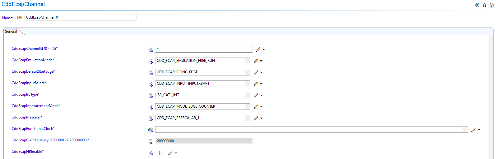
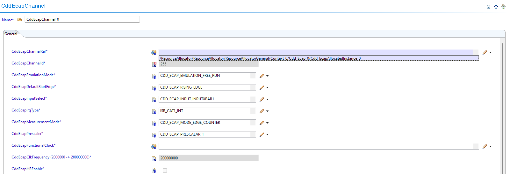
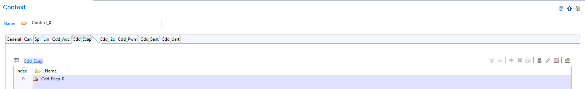
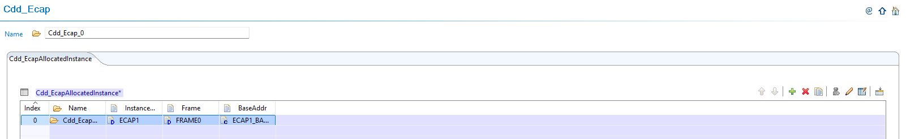
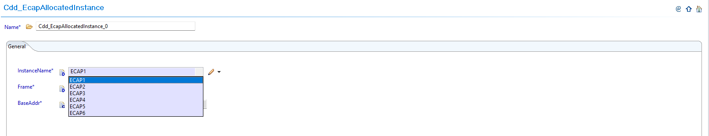

6.11. CDD ECAP Module Migration
Migration Approach: Follow sequential migration for clear understanding of changes at each version. Each migration is organized by individual changes with description, old vs new comparison, and migration actions.
6.11.1. v03.00.00 (i.e release v01.04.00) from v02.00.00 (i.e release v01.03.00) Migration
6.11.1.1. Summary
Version v03.00.00 introduces Resource Allocator as a mandatory architectural foundation. This represents a fundamental shift from direct parameter configuration to centralized resource management:
Resource Allocator Introduction and Channel Configuration Updates: Resource Allocator becomes mandatory with CDD ECAP channel configurations updated to reference Resource Allocator instances
PREREQUISITE: Complete Resource Allocator Setup before proceeding.
6.11.1.2. Change 1: Resource Allocator Introduction and Channel Configuration Updates
6.11.1.2.1. Description
Resource Allocator becomes a mandatory architectural foundation for the CDD ECAP module, with CDD ECAP channel configurations updated to reference Resource Allocator instances. This represents a fundamental shift from direct parameter configuration to centralized resource management, where CDD ECAP instances are allocated through Resource Allocator and then referenced by channel configurations.
6.11.1.2.2. Old vs New Configuration
Previous Configuration (v02.00.00): Direct parameter selection was used without Resource Allocator dependency.
{kind=link}

Fig. 6.48 v02.00.00: Direct ECAP channel parameter selection
New Configuration (v03.00.00): CDD ECAP channel configurations now reference instances allocated through Resource Allocator.
{kind=link}

Fig. 6.49 v03.00.00: Update CddEcapChannelRef to reference the corresponding Resource Allocator’s Cdd_EcapAllocatedInstance
6.11.1.2.3. Migration Actions
Setup Resource Allocator: Follow Resource Allocator Setup
Navigate to Context: Navigate to ResourceAllocatorGeneral → Context → Cdd_Ecap and add CDD ECAP allocator:
{kind=link}

Fig. 6.50 Navigate to Context and add CDD ECAP allocator
Add CDD ECAP Instance: Add Cdd_EcapAllocatedInstance entries for each ECAP instance your application requires:
{kind=link}

Fig. 6.51 Add Cdd_EcapAllocatedInstance entries for each ECAP instance your application requires
Configure ECAP Instance: Set the appropriate InstanceName for each allocated instance:
{kind=link}

Fig. 6.52 Set the appropriate InstanceName (e.g., ECAP1, ECAP2, etc.)
Complete Configuration: Finalize CDD ECAP instance allocation
Navigate to CddEcapChannel: Navigate to Cdd → CddEcapChannel and update configurations to reference the CDD ECAP instances allocated in Resource Allocator
Open Channel Configuration: Access the CddEcapChannel configuration that needs to be updated
Set Instance Reference: Set CddEcapChannelRef to point to the corresponding Cdd_EcapAllocatedInstance in Resource Allocator
Verify Automatic Derivation: Confirm that the CddEcapChannelId parameter is now automatically derived from the Resource Allocator reference
Note
The Resource Allocator module must be configured before the CDD ECAP module to ensure correct instance availability. Available ECAP instances are determined by the Resource Allocator’s Cdd_EcapAllocatedInstance configuration for the current context.
6.11.2. v02.00.00 (i.e release v01.03.00) from v01.00.00 (i.e release v01.02.00) Migration
6.11.2.1. Summary
Version v02.00.00 introduces new parameters for enhanced functionality and high-resolution capture capabilities while maintaining backward compatibility for basic ECAP operations:
Emulation Mode Support: CddEcapEmulationMode parameter added for debug scenarios
High-Resolution Mode Features: CddEcapHREnable and CddEcapHRConfigApi parameters added for finer capture resolution
6.11.2.2. Change 1: Emulation Mode Support
6.11.2.2.1. Description
Version v02.00.00 introduces emulation mode support for debug scenarios through the new CddEcapEmulationMode parameter. This parameter controls ECAP behavior during debug and emulation operations.
6.11.2.2.2. Old vs New Parameter Configuration
New Parameter Added:
Parameter |
v01.00.00 |
v02.00.00 |
|---|---|---|
CddEcapEmulationMode |
Not available |
Added for debug/emulation control |
Parameter Details:
Purpose: Controls ECAP behavior during debug/emulation scenarios
Location: CddEcapChannel container
Configuration: Required for debug setup compatibility
6.11.2.2.3. Migration Actions
Navigate to CddEcapChannel: Open CddEcapChannel container in EB Tresos
Configure Emulation Mode: Set the CddEcapEmulationMode parameter as required for your debug setup
Verify Debug Compatibility: Ensure the emulation mode setting matches your development and debug environment requirements
6.11.2.3. Change 2: High-Resolution Mode Features
6.11.2.3.1. Description
Version v02.00.00 introduces high-resolution (HR) mode capabilities for finer capture resolution through two new parameters: CddEcapHREnable and CddEcapHRConfigApi. These features are optional and provide enhanced capture precision when required.
6.11.2.3.2. Old vs New Parameter Configuration
New Parameters Added:
Parameter |
v01.00.00 |
v02.00.00 |
|---|---|---|
CddEcapHREnable |
Not available |
Added for high-resolution capture functionality |
CddEcapHRConfigApi |
Not available |
Added for high-resolution API functions |
Parameter Details:
CddEcapHREnable: Enable high-resolution mode for finer capture resolution
CddEcapHRConfigApi: Enable/disable high-resolution API functions
Usage: Optional features - only enable if high-resolution capture is needed
6.11.2.3.3. Migration Actions
Evaluate HR Requirements: Determine if your application requires high-resolution capture functionality
Enable HR Mode (Optional): If finer capture resolution is needed, enable CddEcapHREnable parameter
Enable HR APIs (Optional): If high-resolution API functions are required, enable CddEcapHRConfigApi parameter
Maintain Compatibility: For applications not requiring HR features, leave parameters in default configuration to ensure backward compatibility
Important
For users migrating from v1.0.0 to v2.0.0 who do not require High-Resolution Mode features or Emulation Mode support, the default configurations ensure backward compatibility and will not affect your current working setup.